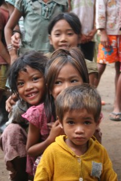

Who We Are
SVN School is dedicated to improving the educational opportunities for the poor and marginalised children. We build schools and support communities by providing a free basic education for these children.
SVN has a very strong sense of social purpose combined with a balanced sustainable model that focuses on educating children in post-conflict developing countries whilst stimulating global cultural exchange and understanding.
We are at a pivotal stage of our development, and have ambitious plans to grow and extend the impact on young people worldwide. SVN pilot phase (2009-11), driven by the effort of its founder working with indigenous people in remote Central India, has demonstrated the viability, affordability and strength of its model.
By actively partnering the newly built and run SVN community schools in poor and remote regions of the country with affluent ‘western’ schools and organisations, we have a sustainable model that works. SVN now has a genuine opportunity to expand its global reach.
Vision
To teach the unreached: where children in remote and post-conflict areas have access to basic education and improved life chances.
Mission
We work with communities to build schools and develop local teachers, providing a low cost and sustainable way to teach the unreached.